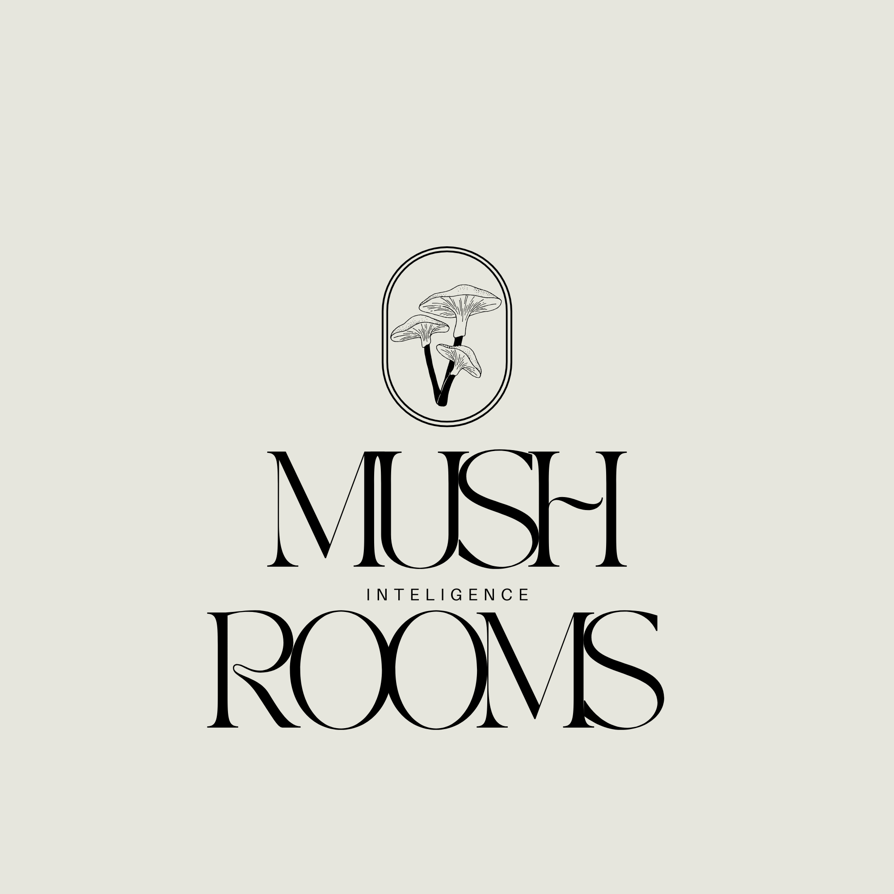

Coletivo de Inteligência de Fontes Abertas (OSINT)
Onde os dados se conectam sob a superfície. O The Mushrooms Intelligence é um coletivo dedicado à investigação de fontes abertas, análise de dados e busca por padrões invisíveis.
Cores utilizadas em nossa identidade:
Hex: #E8E6DE (Fundo) | #000000 (Fonte)